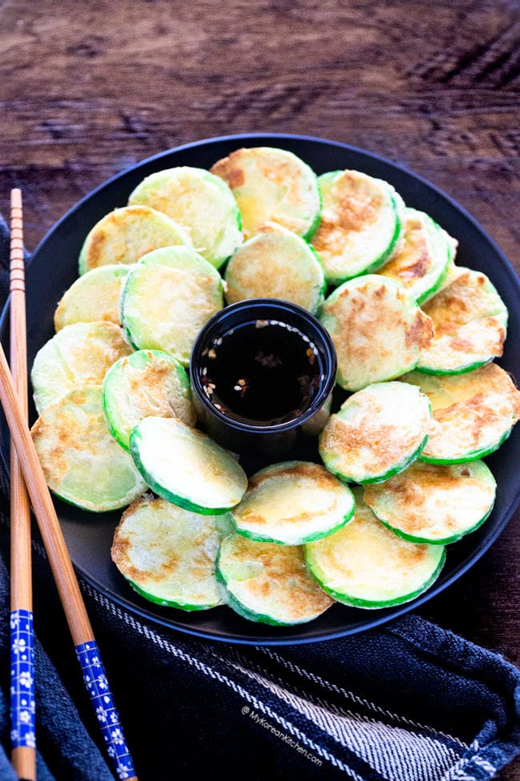

Pan Fried Korean Zucchini (Hobak Jeon)

Description
Pan fried Korean zucchini, known as hobak jeon (호박전) is a popular Korean zucchini side dish.
Thinly sliced zucchini is lightly seasoned with salt then coated in a thin batter of flour and egg. Then it is pan fried in a lightly greased pan.
While hobak jeon can be made any time of the year, summer tends to be the popular time for making it. It is also commonly served on New Years’ Day (Seollal) and Korean Thanksgiving Day (Chuseok) with other Korean celebratory food.
Ingredients
- 1 Korean zucchini (or summer squash), (185g / 7 ounces), thinly sliced (0.3 – 0.5cm / 0.2 inches)
- 3 Tbsp all purpose flour (rice flour or Korean pancake mix will work fine too.)
- 2 eggs , beaten
- 3/4 tsp fine sea salt , divided into one 1/4 tsp lot and one 1/2 tsp lot
- Some cooking oil
Steps
- Place the sliced zucchini on a flat surface (I used a rimmed baking sheet). Sprinkle salt (1/4 tsp) around the zucchini evenly. Rest for about 5 mins. Gently wipe any excess moisture from the zucchini with kitchen paper.
- Place the flour and remaining salt (1/2 tsp) in a freezer bag and add the zucchini. Shake the bag, while holding tightly the open end with one hand, ensuring the zucchini is evenly coated.
- Take out the zucchini from the bag one by one, gently shake off excess flour, dunk them into a bowl of beaten egg. Coat both sides of the zucchini with the egg in batches.
- Preheat a skillet over medium to medium low heat. Once heated, add some cooking oil and spread well. Gently place the zucchini and cook both sides until lightly golden brown.
(It is important to cook the zucchini over medium to medium low to heat to avoid burning it. It will take about 3-4 mins to cook both sides but it will depend on the thickness of your zucchini. Flip them over halfway through. You may have to cook them in batches.)
Transfer to a plate.
- Serve with Korean pancake dipping sauce, cooked rice and other Korean side dishes.